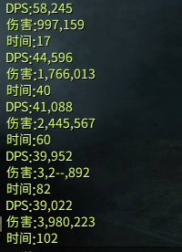

直伤拔刀 剑枪
心流稳定器，战术装填，伤势愈合，过载弹壳，手枪5|战术填装黑=心流条=巨龙扳机，充能反色=巨龙扳机黑=战术填装黑=龙刺地雷，蓄力5格=拔刀5，蓄力满=拔刀1，心流稳定器，战术装填，枪刃3，手枪5，枪刃4，枪刃2黑=收枪，剑3，手枪4，枪刃2，充能反色=过载弹壳，充能反色=伤势愈合|心流稳定器|
心流稳定器,7,50|战术装填,0,600,,,,,,,,,,b|伤势愈合,6,950,,,,,,,,,,b|过载弹壳,8,600,8,300|手枪5,5,600,2,600,,,,,,,,,,,,,,,,1,8000,0|战术填装黑|心流条|巨龙扳机,F2,1100|充能反色|巨龙扳机黑|龙刺地雷,9,200|蓄力5格|拔刀5,5,500,,,,,,,,,,,,,,,,,,1,2300,0|蓄力满|拔刀1,1,1100|枪刃3,3,700,,,,,,,,,,b|枪刃4,4,500,,,,,,,,,,b|枪刃2黑|收枪,F1,30|剑3,3,500,,,,,,,,,,b|手枪4,4,630,,,,,,,,,,b|枪刃2,2,700,,,,,,,,,,b
[&DQIEHwsVRCumAKYA8hryGv0a/RrwGvAa/Br8GgAAAAAAAAAAAAAAAAAAAAADWgA2AAkBAA==]
取色自己看吧 能看懂就用用 看不懂就算了 跟魂武的取色差不多 ，心流条 取大概三分之二的位置 范围取色 模糊度50以上 ，确保没buff时也能蓄满

评论列表（31）
可以在战术装填前面加个“充能反色=战术装填”的判断，避免中途追BOSS的时候乱轴打断扳机
拔刀5 后面 短暂的延迟 的时候 接一个 拔刀4 伤害会高一点，怎么写进去？大佬
直接在巨龙扳机F2里加个跟随按键
我用“自由循环v1.75b3-1”就不行，用“自由循环v1.74B2.31”就正常
我跟你一样，0灌 37k
你们技能顺序都正常吗？有没有拔刀23？
有什么需要注意的取色吗？
用1.74就是正常的，取色按火车佬说的就行
确实噢，我也是1.75取色的，换回1.74之后就正常了
大佬按你的技能位置，为啥我不放刃**技能，放到前面就能放
大佬牛啊，拔刀都能写
太强了，我自己研究了半天，就写了个半成品的拔刀，现在可以直接抄作业了😂
火车你代码分享有点问题，你在重新分享下，在主循环最后位置不要有“，” 如果有“，”分享代码别人复制会出现取色里有多余的取色按键，或者导入代码出现错误
火车佬，能问问那个心流条，我取完范围后，那个颜色是取（无心流的）透明色，还是取（有心流的）亮橙色呀
橙色
心流条我取橙色模糊到80都不行，但反色取空框就正常能用
请问大佬，经常随机放拔刀23是咋回事=。=有时候蓄力满不斩拔刀1
我也是额
请问充能反色是哪个位置呢？是第一个没充能的反色吗？
充能反色，就是取拔刀时，第一颗子弹亮时的反色
蓄力满取满格时最后一个子弹，拔刀1就取拔刀的1技能，拔刀23压根没取色怎么会放呢，怕延迟不对，就把**刃234打上纯黑跳转
**刃234都有纯黑跳转的
起手第一刀经常是拔刀3，我确定没有拔刀23的取色
而且经常蓄力没满就切到其他技能
你的问题解决了吗，我跟你一样
俺也一样，把循环拆开都能执行，就是全都放在一起的时候就有时候拔刀2和3 有时候直接没蓄力完就释放了，很奇怪
用1.74版本
各位同好，复制的时候把 最后的（b|,剑2=2）中间的逗号去掉哟~~
人蒙了你说的在哪？
改过了，初版发的循环里多个逗号没删干净
我的乖乖，真是大佬！！感谢大佬！大佬牛！！